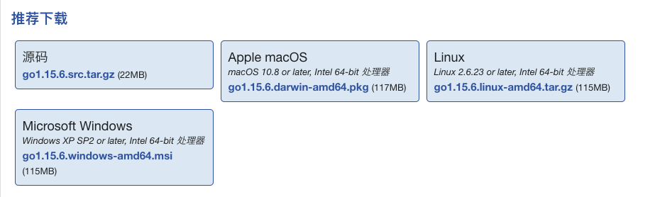

新买了 Apple M1 Mac，却不知道如何安装 Go？
大家好，我是站长 polarisxu。
前些天有一位朋友问我：
有些朋友可能会有点奇怪，M1 有什么特别的吗？为了照顾部分童鞋，这里简单介绍下。
01 为什么会出现这个问题
大家知道不同的操作系统是很不一样的，同时不同的 CPU 架构也是很不一样的。Go 号称是跨平台的，自然要支持这些操作系统和 CPU 架构。
在 Go 中，GOOS 表示操作系统，GOARCH 表示 CPU 架构。比如你的 Linux 服务器，一般是 GOOS=linux，GOARCH=amd64（即 x86-64）；你现在的 Mac 很可能是 GOOS=darwin，GOARCH=amd64 等。这里定义了 Go 支持的操作系统和 CPU 架构：https://docs.studygolang.com/pkg/runtime/internal/sys/#pkg-constants。当然，这里的 GOOS 和 GOARCH 并非任意组合都支持。
一般地，很多人安装 Go，通过网上下载编译好的、对应系统的包，比如到 https://studygolang.com/dl 可以下载你需要的文件，常见的系统是：Linux、Mac 和 Windows。

比如 Apple macOS，下载后双击打开，按提示操作即可。
然而，最新版 Mac 没有使用 Intel 芯片，而是使用了自研的 M1 芯片。之前 Intel 芯片是 amd64 架构，而 M1 芯片是 arm64 结构。前面说了，虽然 Go 是支持 arm64 架构的，但并非操作系统和 CPU 架构的任意组合都支持，也就是说 GOOS=darwin，GOARCH=arm64 的组合不支持（或者说没有针对这个用于 Mac 的组合做处理）。因此，现有预编译的版本都没法安装到 M1 Mac 上。
02 探讨解决方案
要解决这个问题，当然前提是 Go 团队支持 M1。虽然 Go 以往的版本都不支持，但对 M1 的支持，Go 已经开发完毕，而且网上已经有了 Intel 和 M1 的性能测试。
对 M1 的支持，需要等到 Go1.16 发布，也就是明年 2 月份。但我们可以通过 Go 代码仓库的 master 分支来编译安装 Go，因为它是支持 M1 的（注意，因为是开发版本，请勿用于生产环境）。
现在引出另一个问题：因为 Go 自 1.5 开始实现了自举，如果从源码安装 Go，需要本地有 Go 的编译器。。。陷入了死循环。
如果是非 M1 芯片，通常的做法是：下载一份 Go1.4 版本代码，编译一个 Go1.4（因为它是 C 语言实现的，不依赖 Go）。然后用这个 Go1.4 编译最新的 Go 源码。
实际上，官方告诉你有四种方法处理这种情况。
源码安装的四种方法
- 下载 Go 的最新二进制版本（其实可以不是最新的）；
- 在一台安装有 Go 的电脑上执行交叉编译；
- 使用 gccgo；
- 即上面提到的方法，编译一个 Go1.4，然后用它编译其他 Go 版本；
更多详细信息参考官方文档：https://docs.studygolang.com/doc/install/source#go14。
所以，对于 M1 芯片安装 Go，方法 1 和方法 4 行不通（Go 1.4 很显然不支持 M1 芯片），而使用交叉编译是一个不错的选择，毕竟 gccgo，很多人并不熟悉。
03 通过交叉编译在 M1 上安装 Go
我认为支持交叉编译是 Go 的一大特色，不仅支持交叉编译 Go 程序，本身也支持交叉编译。
现在就讲解通过交叉编译解决 M1 安装 Go 的问题。
1）下载 Go 最新源码。
在一台非 M1 电脑上，下载 Go 最新源码，假设下载到用户目录：
$ cd ~
$ git clone https://github.com/golang/go
2）进行交叉编译
$ cd go/src
$ GOOS=darwin GOARCH=arm64 ./bootstrap.bash
#### Copying to ../../go-darwin-arm64-bootstrap
#### Cleaning ../../go-darwin-arm64-bootstrap
Removing VERSION.cache
Removing bin/
Removing pkg/
Removing src/cmd/cgo/zdefaultcc.go
Removing src/cmd/go/internal/cfg/zdefaultcc.go
Removing src/cmd/go/internal/cfg/zosarch.go
Removing src/cmd/internal/objabi/zbootstrap.go
Removing src/go/build/zcgo.go
Removing src/runtime/internal/sys/zversion.go
#### Building ../../go-darwin-arm64-bootstrap
Building Go cmd/dist using /Users/xuxinhua/go1.4. (go1.4-bootstrap-20170531 darwin/amd64)
Building Go toolchain1 using /Users/xuxinhua/go1.4.
Building Go bootstrap cmd/go (go_bootstrap) using Go toolchain1.
Building Go toolchain2 using go_bootstrap and Go toolchain1.
Building Go toolchain3 using go_bootstrap and Go toolchain2.
Building packages and commands for host, darwin/amd64.
Building packages and commands for target, darwin/arm64.
----
Bootstrap toolchain for darwin/arm64 installed in /Users/xuxinhua/go-darwin-arm64-bootstrap.
Building tbz.
-rw-r--r-- 1 xuxinhua staff 128102136 12 16 17:15 /Users/xuxinhua/go-darwin-arm64-bootstrap.tbz
从上面的输出可以看到，在用户目录下会生成 go-darwin-arm64-bootstrap 文件夹和 go-darwin-arm64-bootstrap.tbz 压缩包，将其中之一发送给 M1 Mac，在 M1 电脑上可以以此作为 bootstrap，重新编译 Go，也可以直接将它作为 Go 编译器使用。
$ cd ~/go-darwin-arm64-bootstrap
$ bin/go env
GO111MODULE=""
GOARCH="arm64"
GOBIN=""
GOCACHE="~/Library/Caches/go-build"
GOENV="~/Library/Application Support/go/env"
GOEXE=""
GOFLAGS=""
GOHOSTARCH="arm64"
GOHOSTOS="darwin"
GOINSECURE=""
GOMODCACHE="~/go/pkg/mod"
GONOPROXY=""
GONOSUMDB=""
GOOS="darwin"
GOPATH="~/go"
GOPRIVATE=""
GOPROXY="https://proxy.golang.org,direct"
GOROOT="~/go-darwin-arm64-bootstrap"
GOSUMDB="sum.golang.org"
GOTMPDIR=""
GOTOOLDIR="~/Downloads/go-darwin-arm64-bootstrap/pkg/tool/darwin_arm64"
GOVCS=""
GOVERSION="devel +5a25a3fd1d Tue Dec 15 02:35:59 2020 +0000"
GCCGO="gccgo"
AR="ar"
CC="clang"
CXX="clang++"
CGO_ENABLED="1"
GOMOD="/dev/null"
CGO_CFLAGS="-g -O2"
CGO_CPPFLAGS=""
CGO_CXXFLAGS="-g -O2"
CGO_FFLAGS="-g -O2"
CGO_LDFLAGS="-g -O2"
PKG_CONFIG="pkg-config"
GOGCCFLAGS="-fPIC -pthread -fno-caret-diagnostics -Qunused-arguments -fmessage-length=0 -fdebug-prefix-map=/var/folders/6r/nghqxtb92kv5136s7k67_cc00000gn/T/go-build4293620280=/tmp/go-build -gno-record-gcc-switches -fno-common"
04 总结
吃螃蟹嘛，应该有一定的心里准备。但 Go 还是很给力。Bradfitz 发推文说，苹果在 6 月 22 日说，会给 Go 支持 Apple Silicon (arm64) 提交 patch，但到目前为止没看到，至少没有在邮件组中出现，他们没有在 https://tip.golang.org/CONTRIBUTORS 列表中。所有支持 Apple Silicon 的工作都是 Go 社区做的。
买了 M1 还没装 Go 的，可以试试了！